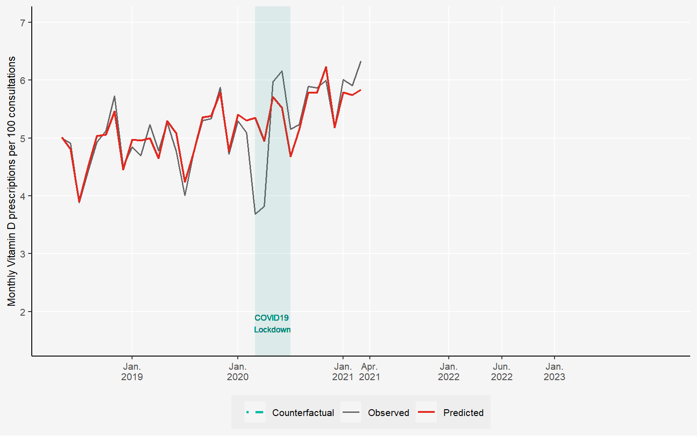

The Impact of Choosing Wisely™ Recommendations and Insurance Coverage Restrictions on Low-Value Care: An Interrupted Time Series Analysis of Vitamin D Tests

Vitamin D and Low-Value Care
Health systems continue to face the problem of low-value care, i.e. services that bring limited benefit to patients while adding costs and administrative effort. Vitamin D testing has become a prominent example.
Although clinical guidelines consistently advise against routine testing for low-risk individuals, the use of these tests has continued to rise in many countries. In Switzerland, testing rates almost doubled between 2013 and 2020, from 96 to 199 tests per 1000 inhabitants.
A Policy Response
This increase led to several policy measures. In April 2021, the Smarter Medicine initiative, which is the Swiss equivalent of Choosing Wisely™, included vitamin D testing in its list of procedures to avoid. The recommendation was simple: no routine measurement of 25(OH)-Vitamin D in patients without risk factors. Physicians were informed of these measures.
A year later, the Federal Office of Public Health introduced a coverage restriction, limiting reimbursement for such tests. Together, these steps offered a natural experiment to observe how clinical recommendations and financial incentives influence medical practice.
Using Real-World Data to Evaluate the Effect
To examine these changes, we analyzed mandatory health insurance claims data from SWICA, covering about 10% of the Swiss population. The data include more than 3’600 general practitioners and group practices, with adult patients who had at least one consultation between 2018 and 2023.
We applied interrupted time-series analysis to estimate how testing volumes evolved around the two interventions. The method compares observed data with a counterfactual trend, which shows what we would expect if the interventions had not taken place.
The models account for patient characteristics, clinical indications for testing based on Swiss guidelines, and physician-specific prescribing behavior. This allows us to isolate the effect of the policy interventions from broader temporal or compositional changes.
A Multi-Disciplinary Collaboration
This study is the result of a productive collaboration between the health services research team at SWICA, physicians at the Institute of Primary Care of the University of Zürich, and health economists at the Institute of Health Economics and Health Policy of the Bern University of Applied Sciences.
This collaboration demonstrates how insights from claims data can advance our understanding of the healthcare system and inform policy decisions aimed at reducing costs for the Swiss population.
This research has been published in BMC Health Services Research (Sallin et al. 2025).
Key Findings and Policy Implications
Clinical recommendations alone proved less effective than government regulation in reducing low-value care in Switzerland—but our analysis revealed important nuances.
We found no unintended consequences from the coverage limitation: vitamin D supplementation rates remained unaffected, suggesting the policy successfully targeted testing without compromising appropriate treatment.
However, from a health policy perspective, simply removing procedures from basic insurance coverage cannot be the default solution for addressing unnecessary treatments. This regulatory approach creates administrative burden.
A more sustainable solution lies in strengthening financial incentives that align provider and payer interests. In Switzerland, this can be achieved through managed care contracts between physician networks and health insurers within alternative insurance models. These contracts establish quality standards while creating shared financial responsibility among physicians—encouraging appropriate care delivery without heavy-handed regulation.
References
Sallin, Aurélien, Daniel Ammann, Caroline Bähler, Tobias Müller, Stefan Neuner-Jehle, Oliver Senn, and Eva Blozik. 2025. “The Impact of Choosing WiselyTM Recommendations and Insurance Coverage Restrictions on the Provision of Low-Value Care: An Interrupted Time Series Analysis of Vitamin d Tests.” BMC Health Services Research 25 (1): 1359.